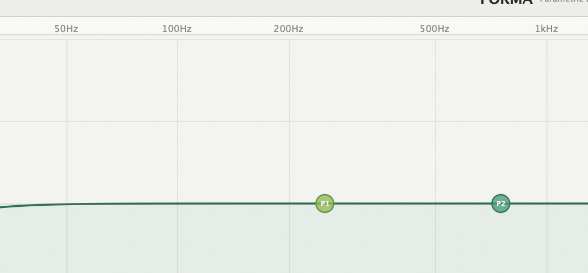

A precise, 5-band parametric equalizer with real-time spectrum analyzer and draggable EQ nodes. Crafted for producers who want full control over their sound.

What's inside
Low Cut, Low Peak, Mid Peak, High Peak and High Cut — each with independent frequency, gain and Q controls.
Dual-channel spectrum analysis overlaid on the EQ curve. See exactly what your audio looks like while you shape it.
Click and drag any band node directly on the frequency plot. Scroll the mouse wheel to adjust Q without leaving the graph.
Professional dual-channel VU meter with peak hold, calibrated to +4 dBu. Clip indicator fires exactly at 0 dBFS.
Toggle any individual band on or off instantly. Great for A/B comparisons without touching your settings.
Works in Ableton Live, Logic Pro, FL Studio, Reaper, Pro Tools (VST3) and any other major macOS DAW.
Get the plugin
Free for macOS. Includes VST3 and AU formats. One installer, both formats, works in every major DAW.
macOS may show a security prompt — right-click the installer and choose Open to bypass Gatekeeper.